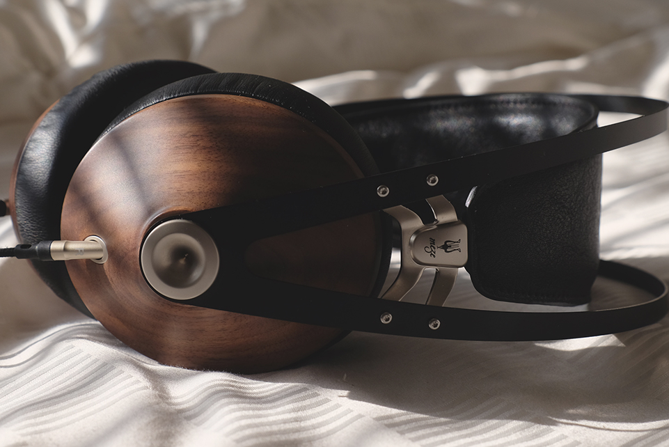
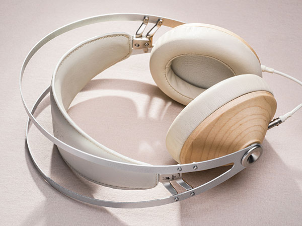

Meze 99 Classics
讓音樂回歸原點
Meze 99 Classics
原木之聲
讓音樂回歸原點
處處顯露溫暖質感
2020.01.05 by Benben
原木製作外殼
原木與音樂，關係向來融洽；木材與音響，同樣關係密切。木質纖維板是主流的揚聲器聲箱材料，紙盤單元依然受到不少品牌、發燒友所喜愛。也許，師法自然，採用與樂器一樣的質材，可以令音響重播出有如樂器一樣的聲音吧。來自羅馬尼亞的耳機品牌
Meze，相信能夠透過原木，找到音樂真諦。成果，就是 99 Classics 頭戴式耳機。
隨着科技演變，電聲技術在重播方面，似乎發展兩大方向，運用新近開發的金屬、合成物料，盡力減少雜聲，追求無限精準；另一方面，以自然界常見的材料，創製出自然和諧的聲音。
隨着科技演變，電聲技術在重播方面，似乎發展兩大方向，運用新近開發的金屬、合成物料，盡力減少雜聲，追求無限精準；另一方面，以自然界常見的材料，創製出自然和諧的聲音。
頭帶設計成另一焦點
整副耳機的視覺焦點從兩片木質耳機外殼中央的金色（或銀色的固定拴）向上延伸，兩條金屬支架搭配大片的PU皮質頭帶，構成整個頭帶總成。這兩條金屬支架提供了兩側內向的夾力，而皮質頭帶內部藏著鬆緊帶，讓您戴上耳機可以很自然舒適地戴到定位，摒除了許多耳機常見的機械式高低調節，也減少了耳機本體的振動因素。寬大的頭帶讓下壓力得以分散，小編是算個「大頭仔」，不僅兩耳間距寬，戴起耳機總要下拉得比別人都低。因此，類似這種設計的耳機常讓我久戴之後頭頂會有壓力，聆聽Meze
99 Classics過程，這種下壓力並不造成我的困擾，當是兩側的夾力，讓我聽一段時間就要取下耳機讓耳朵舒緩一下。

空間感表現出色
買耳機不是拿來欣賞的，看起來再美，若聲音不好聽，也是白搭。Antonio Meze是位設計師，他的作品外觀好看是理所當然的，99
Classics的聲音能不能也跟看起來那樣迷人，才是重點。我個人向來偏愛開放式耳機，因為開放式耳機沒有耳罩的限制，音樂聽起來比較開放，就好像茶葉在壺中得以舒展，如果用了金屬濾網或茶葉包，那種舒坦的自在也就沒了。更者，聆聽開放式耳機，耳朵也比較沒有壓力，聆聽時間長也比較不容易感到疲憊。99
Classics聽起來確實還是一副密閉式耳機，卻有很好的空間感和舞台感，如果音量不要開的太大聲，那個空間感會更顯開闊（當然，此時您會需要一個較安靜的聆聽環境）；如果音量開得大一點，聲音顯得飽滿些，那種自在感會減損幾分。
低頻量感豐富
另一個值得一書的是99 Classics的低頻。如果您喜歡低頻多一點的耳機，通常選擇DJ用的耳機，可以在挑耳機上少花時間。99
Classics外觀這麼典雅的耳機，還沒聽之前，大概任何人都會輕看它的低頻表現，實則不然。無論我聽古典音樂或爵士，低音大提琴的拉奏和撥奏都豐厚飽滿，聽流行音樂的電子合成低音更是如同滾滾浪潮，其低頻量感聽起來直逼DJ耳機。無論是聽2015年高雄音響展示範CD第三軌的double
bass，圓滾滾的Q彈音質，抑或第十二軌的白遼士「幻想交響曲第四樂章」裡面的低音弦樂聲部，都盡顯其低音量感確實不容小覷。
溫暖中有解析的人聲
Antonio Meze力求的好聲音，在99
Classics身上，小編個人以為，其中頻和高頻的表現佔了很重要的地位，甚至比低頻表現更傑出：它的中頻相當清楚而且明晰，高頻自然延伸。當然，它比不上平面振膜耳機在這方面那般輕鬆，但是對於音樂的描繪卻相當足夠，而且不知是因為用了密閉式的原木耳罩外殼的緣故，中頻聽起來還帶有一股溫意，那一點溫暖、一點厚度，就夠讓你一首歌一首歌地點播下去。我從Michael
Jackson聽到Louis Armstrong，又從Diana Krall聽到張懸，如果您喜歡聽人聲演唱，99 Classics不會讓您失望。